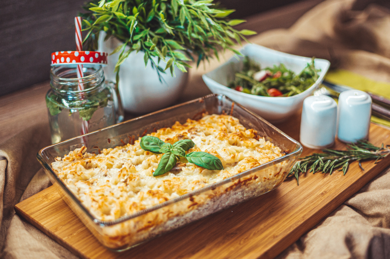

Tuna Bake

Perfect weeknight meal, with leftovers
Easy, hot, and filling. This tuna bake is made with macaroni, creamy soup, cheese, tuna, and fried onions.
- 3 Cups of pasta of your choice
- 1 (8 oz)can of Tuna packed in water
- 1 (10.5 oz) can condensed cream of mushroom soup
- 1 cup shredded cheese of choice (sharp cheddar)
- 1 1/2 cups French fried onions
- Preheat over to 350 degrees F (175 C).
- Lightly grease 9"X13" baking dish.
- Cook pasta following directions on package.
- Drain tuna.
- Mix cooked pasta, tuna, soup and half the cheese.
- Pour into prepared dish and bake for 20 minutes.
- Mix remaining cheese and French fried onions.
- Sprinkle on top of Tuna Bake and bake for 5 minutes.
Back to Odin-Recipes